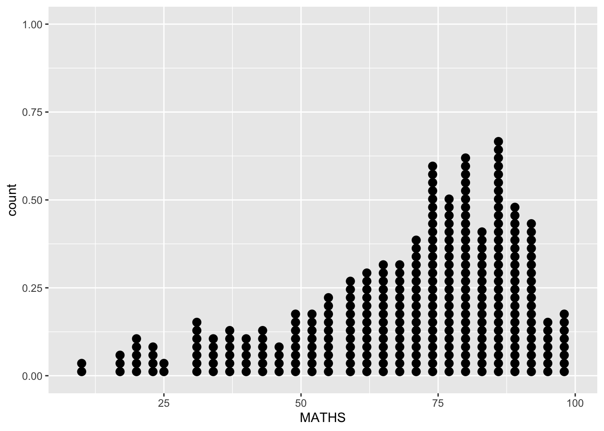
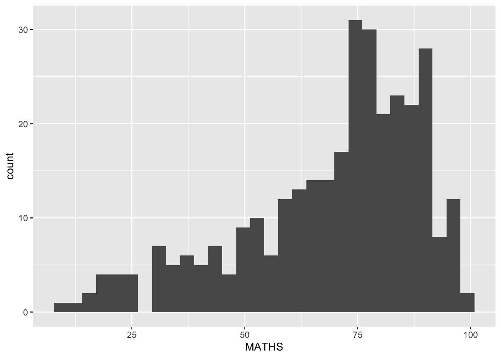

pacman::p_load(tidyverse)Hands-on-Exercise-1
Getting Started
Install and Launching R Packages
The code chunk below uses p_load() of pacman package to check if tidyverse packages are installed in the computer. If they are installed, they will be launched into R.
Importing the Data
exam_data <- read_csv("Data/Exam_data.csv")Rows: 322 Columns: 7
── Column specification ────────────────────────────────────────────────────────
Delimiter: ","
chr (4): ID, CLASS, GENDER, RACE
dbl (3): ENGLISH, MATHS, SCIENCE
ℹ Use `spec()` to retrieve the full column specification for this data.
ℹ Specify the column types or set `show_col_types = FALSE` to quiet this message.Using ggplot2
geom_point for drawing individual points (e.g., scatter plot)
geom_line for drawing lines (e.g., line charts)
geom_smooth for drawing smoothed lines (e.g., for simple trends or approximations)
geom_bar for drawing bars (e.g., bar charts)
geom_histogram for drawing binned values (e.g., histogram)
geom_polygon for drawing arbitrary shapes
geom_map for drawing polygons in the shape of a map by accessing the data to use using the map_data() function
For the complete list, please refer here.
Plotting Bar Charts
The code chunk below plots a bar chart using geom_bar().
ggplot(exam_data,
aes(x=RACE)) +
geom_bar()
Plotting Geometric Objects
In a dot plot, the width of a dot corresponds to the bin width (or maximum width, depending on the binning algorithm), and dots are stacked, with each dot representing one observation.
In the code chunk below, geom_dotplot() of ggplot2 is used to plot a dot plot.
ggplot(exam_data,
aes(x=MATHS)) +
geom_dotplot(dotsize=0.5)Bin width defaults to 1/30 of the range of the data. Pick better value with
`binwidth`.
Be warned
The y-scale is rather misleading.
Note
The code chunk below performs the following two steps:
scale_y_continuous()is used to turn off the y-axisbinwidth argument is used to change the binwidth to 2.5.
ggplot(exam_data,
aes(x=MATHS)) +
geom_dotplot(binwidth=2.5,
dotsize=0.5) +
scale_y_continuous(NULL,
breaks=NULL)
Plotting Histograms
In the code chunk below, geom_histogram() is used to create a simple histogram by using values in MATHS field of exam_data.
ggplot(exam_data,
aes(x=MATHS)) +
geom_histogram()`stat_bin()` using `bins = 30`. Pick better value with `binwidth`.
Note
Note that the default bin is 30.
Modifying Plots by Changing geom()
In the code chunk below,
bins argument is used to change the number of bins to 20,
fill argument is used to shade the histogram with light blue colour, and
color argument is used to change the outline colour of the bars in black
ggplot(exam_data,
aes(x=MATHS)) +
geom_histogram(bins=20,
color="black",
fill="light blue")
Modifying Plots by Changing aes()
The code chunk below changes the fill of the histogram by using sub-group of aesthetic().
ggplot(exam_data,
aes(x=MATHS,
fill=GENDER)) +
geom_histogram(bins=20,
color="grey30")
Note
This approach can be used to colour, fill and alpha of the geometric.
Plotting Kernel Density Lines
geom-density() computes and plots kernel density estimate, which is a smoothed version of the histogram. It is a useful alternative to the histogram for continuous data that comes from an underlying smooth distribution.
The code below plots the distribution of Math scores in a kernel density estimate plot.
ggplot(exam_data,
aes(x=MATHS)) +
geom_density()
The code chunk below plots two kernel density lines by using color or fill arguments of aes().
ggplot(exam_data,
aes(x=MATHS,
color=GENDER)) +
geom_density()
Plotting Boxplots
geom_boxplot() displays continuous value lists. It visualises five summary statistics (namely median, two hinges and two whiskers) and all individual outlying points.
The code chunk below plots boxplots using geom_boxplot().
ggplot(exam_data,
aes(y=MATHS,
x=GENDER)) +
geom_boxplot()
Notches are used in boxplots to visually assess whether the medians of distributions differ. If the notches do not overlap, this is evidence that the medians are different. The code chunk below plots the distribution of Maths scores by gender in notched plots instead of boxplots.
ggplot(exam_data,
aes(y=MATHS,
x=GENDER)) +
geom_boxplot(notch=TRUE)
Plotting Violin Plots
geom_violin() is designed for creating violin plots. Violin plots are used to compare multiple data distributions. With ordinary density curves, it is difficult to compare more than just a few distributions as the lines visually interfere with each other. With a violin plot, it is easier to compare several distributions as they are placed side by side.
The code below plots the distribution of Math scores by gender in a violin plot.
ggplot(exam_data,
aes(y=MATHS,
x=GENDER)) +
geom_violin()
Plotting Scatterplots
geom_point() is especially useful for creating scatterplots. The code chunk below plots a scatterplot showing the Math and English grades of pupils using geom_point().
ggplot(exam_data,
aes(x=MATHS,
y=ENGLISH)) +
geom_point()
Combining geom Objects
The code chunk below plots the data points on the boxplot by using both geom_boxplot() and geom_point().
ggplot(exam_data,
aes(y=MATHS,
x=GENDER)) +
geom_boxplot() +
geom_point(position="jitter",
size=0.5)
Adding Summary Statistics into Plots
The Statistic functions statistically transform data, usually as some form of summary. For example:
Frequency of values of a variable (bar graph)
a mean
a confidence limit
There are two ways to use these functions:
add a
stat_()function and override the default geom, oradd a
geom_()function and override the default stat.
Working with stat() - stat_summary() method
The code chunk below adds mean values by using stat_summary() function and overrides the default geom.
ggplot(exam_data,
aes(y=MATHS, x=GENDER)) +
geom_boxplot() +
stat_summary(geom="point",
fun.y="mean",
color="red",
size=4)Warning: The `fun.y` argument of `stat_summary()` is deprecated as of ggplot2 3.3.0.
ℹ Please use the `fun` argument instead.
Working with stat() - geom() method
The code chunk below adds mean values by using geom() function and overrides the default stat.
ggplot(exam_data,
aes(y=MATHS,
x=GENDER)) +
geom_boxplot() +
geom_point(stat="summary",
fun.y="mean",
color="red",
size=4)Warning in geom_point(stat = "summary", fun.y = "mean", color = "red", size =
4): Ignoring unknown parameters: `fun.y`No summary function supplied, defaulting to `mean_se()`
Adding a Best Fit Curve on Scatterplots
The interpretability of the scatterplot of English against Math grades of pupils can be improved by adding a best fit curve. In the code chunk below, geom_smooth() is used to plot a best fit curve on the scatterplot.
ggplot(exam_data,
aes(x=MATHS,
y=ENGLISH)) +
geom_point() +
geom_smooth(size=0.5)Warning: Using `size` aesthetic for lines was deprecated in ggplot2 3.4.0.
ℹ Please use `linewidth` instead.`geom_smooth()` using method = 'loess' and formula = 'y ~ x'
Note
The default method used is loess.